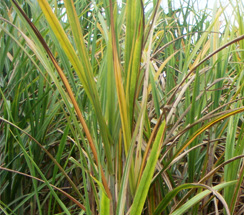
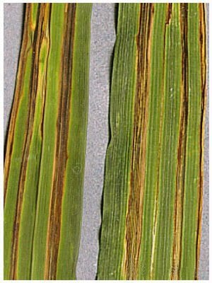
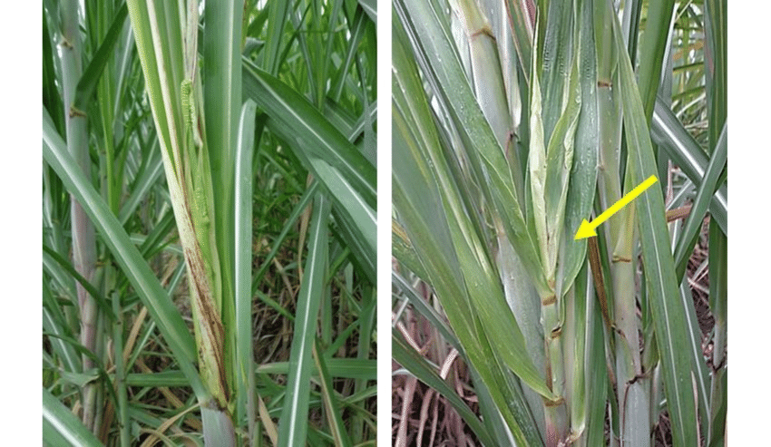

The spindle leaves (3rd & 14th) display drying. At a later stage, stalks become discoloured and hollow.
Acervuli (black fruiting bodies) develop on rind and nodes. After splitting open the diseased stalk, a sour smell emanates.
The internal tissues are reddened with intermingled transverse white spots.
Survival and spread
In rainy season, the disease spreads so fast that whole crop dries and not a single milleable cane is obtained
Favourable conditions
Primary transmission through soil and diseased setts, while the secondary transmission through air, rain splash and soil.
WiltDisease symptoms

Externally gradual yellowing and drying of foliage, shrinkage/withering of canes.
Internally light to dark purplish or brown discolouration of ground tissue, pithiness and boat shaped cavities in the middle of the internodes
Survival and spread
The wilt pathogens are transmitted through soil, seed pieces, wind, rain and irrigation water.
Favourable conditions
The disease symptoms appear during the monsoon and post monsoon periods, affected plants are present either singly or in small groups
Grassy shootDisease symptoms
The disease is characterized by proliferation of vegetative buds from the base of the cane giving rise to crowded bunch of tillers bearing narrow leaves.
The tillers bear pale yellow to completely chlorotic leaves.
Cane formation rarely takes place in affected clumps and if formed the canes are thin with short internodes.
Survival and spread
The grassy shoot disease is primarily transmitted through the diseased seed material (setts) and perpetuated through ratooning.
The MLO is readily transmitted by sap inoculation and in the field it is transmitted through infected setts and perpetuated through crop ratooning.
The aphids are the vectors for this disease
This disease is also transmitted by
a) mechanically by cutting knife,
b) Insects (aphids, black hopper) and
c) Dodder (root parasite).
SmutDisease symptoms

Production of whip like structure of 25 – 150 cm. from the growing point of the canes.
Whip covered by translucent silvery membrane enclosing mass of black powdery spores.
Initial thin canes with elongated internodes later become reduced in length.
Profuse sprouting of lateral buds with narrow, erect leaves especially in ratoon crop
Survival and spread
Sugarcane smut is disseminated via teliospores that are produced in the smut whip. These teliospores located either in the soil or on the plant, germinate in the presence of water.
The primary transmission of the disease is through diseased seed pieces, while the secondary transmission is through windblown spores.
In addition, spores or sporidia, present in or on the soil surface, are also carried to different fields through rain or irrigation water.
Favourable conditions
Hot dry weather is suitable for the completion of disease cycle however; pathogen requires wet conditions for development of teliospores.
Leaf scald diseaseDisease symptoms
The disease can be latent, it can develop unseen for some time and when symptoms fi rst appear, the plant is already seriously infected.
The first sign of the disease is the development of “pencil lines” of white with yellow borders following the veins on the leaf that lead to necrosis (death) of tissue.
The term “scald” for the disease comes from areas of the leaf that loose their color and become a pale green (chlorotic) as they fail to produce chloroplasts.
Survival and spread
Pathogen survives in cane stubble and on agricultural implements and this is an important mechanism of spreading the disease.
It can also survive on grasses, including elephant grass and may be transmitted from them to sugarcane.
Favourable conditions
Periods of stress such as drought, waterlogging, and low temperature are reported to increase disease severity.
Red striped diseaseDisease symptoms
Red stripe is characterized by the appearance on the leaves of chlorotic lesions carrying dark red stripes 0.5-1.0 mm in breadth and several mm in length, either distributed all over the blade, or concentrated in the middle
Several of them may coalesce to cover large areas of the leaf blade, and to cause wilting and drying of the leaves.
Whitish flakes occur on the lower surface of the leaf, corresponding to the red lesions on the upper surface.
These flakes are the dry bacterial ooze. When young shoots are affected, shoot or top rot may result. The growing points of the shoot are yellow and later reddish with dark brown stripes on the shoots.
If the affected plants are cut by splitting the shoot downwards, dark red discolouration of the tissues may be seen.
In the affected canes cavities may form in the pith region, and the vascular bundles are distinct because of the dark red discolouration.
Survival and spread
The disease spreads in the field by wind and rain, and by cutting, as the basal stem from which the sets are taken is mostly free from the bacterial infection.
Favourable conditions
Moist humid conditions favour the development of disease.
Mosaic diseaseDisease symptoms
Young leaves of the crown held against the light source display chlorotic and normal green area imparting mosaic pattern.
The chlorotic area may show reddening or necrosis.
Leaf sheath may also display such symptoms.
Transmission
Primarily transmitted through the diseased seed material and perpetuated through ratooning. This disease is also transmitted mechanically by cutting knife.
PokkahboengDisease symptoms

The general symptoms of Pokkahboeng are mainly of three types;
Chlorotic Phase:
The earliest symptom of Pokkahboeng is a chlorotic condition towards the base of the young leaves and occasionally on the other parts of the leaf blades.
Frequently, a pronounced wrinkling, twisting and shortening of the leaves accompanied the malformation or distortion of the young leaves. The base of the affected leaves is seen often narrower than that of the normal leaves..
Acute Phase or Top-Rot Phase:
The most advanced and serious stage of Pokkahboeng is a top rot phase. The young spindles are killed and the entire top dies.
Leaf infection sometimes continued to downward and penetrates in the stalk by way of a growing point. In advanced stage of infection, the entire base of the spindle and even growing point showed a malformation of leaves, pronounced wrinkling, twisting and rotting of spindle leaves. Red specks and stripes also developed.
Knife-cut Phase (associate with top rot phase): The symptoms of knife-cut stage are observed in association with the acute phase of the disease characterized by one or two or even more transverse cuts in the rind of the stalk /stem in such a uniform manner as if, the tissues are removed with a sharp knife, This is an exaggerated stage of a typical ladder lesion of a Pokkahboeng disease.
Survival and spread
This is an air-borne disease and primarily transmitted through the air-currents and secondary transmission is through the infected setts, irrigation water, splashed rains and soil.
Favourable conditions
20-30°C temperature and the average relative humidity higher than 70 to 80% with a cloudy weather, drizzling rains favors the growth of pathogen.
RustDisease symptoms
The earliest symptoms of common rust on the leaves are small, elongated yellowish spots which are visible on both the surfaces.
These spots increase in size, mainly in length, and turn red-brown to brown in color. A narrow, pale yellow-green halo develops around the lesions.
When the common rust is severe, numerous lesions occur on individual leaves giving them an overall brown or rusty appearance. These lesions coalesce to from large, irregular necrotic areas is usually result in premature death of the leaf. In such cases, the number of live leaves per plant can be seriously reduced.
Survival and spread
The rust pathogen is transmitted by wind and water splash of the urediospores.
Favourable conditions
High humidity and warm temperature favours the development of diseases.
Sugarcane yellow leaf diseaseDisease symptoms
Symptoms of SCYLD are a yellowing of the leaf midrib on the underside of the leaf. The yellowing first appears on leaves 3 to 6 counting down from the top expanding spindle leaf.
Initial symptoms of yellow leaf, with a yellowing of the lower surface of the leaf midrib of leaves 3 to 6 counting from the top expanding spindle leaf.
Yellowing is most prevalent and noticeable in mature cane from October until the end of harvest in March.
The yellowing expands out from the leaf midrib into the leaf blade as the season progresses until a general yellowing of the leaves can be observed from a distance.
Transmission
The virus is transmitted by aphids, Melanaphis sacchari and Rhopalosiphum maidis, in a semi-persistent manner. The virus is also spread by planting infected seed cane.
Favourable conditions
Dry weather conditions during October to until the end of harvest in March.